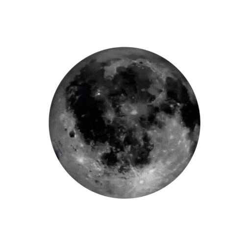

The Moon is Earth's only natural satellite and the fifth largest moon in the solar system. It has been an object of fascination and study throughout human history, inspiring myths, calendars, and scientific exploration.
The Moon is believed to have formed from debris left over after a Mars-sized object, sometimes called Theia, collided with Earth billions of years ago. The resulting debris eventually coalesced under gravity to form the Moon we see today.
The Moon has a diameter of about 3,474 kilometers, roughly a quarter the size of Earth. It orbits Earth at an average distance of about 384,400 kilometers, close enough that it has been visited by human astronauts.
The Moon's surface is covered in craters, mountains, and large plains called maria, which were formed by ancient volcanic activity. These dark, flat regions are visible from Earth and were once mistaken for seas, giving them their Latin name meaning "seas."
The Moon goes through a cycle of phases, from new moon to full moon and back again, over about 29.5 days. These phases occur because of the changing angles at which sunlight illuminates the Moon as it orbits Earth.
The Moon's gravitational pull is the primary cause of ocean tides on Earth. It also helps stabilize Earth's axial tilt, which contributes to a relatively stable climate over long periods of time.
The Moon is the only celestial body beyond Earth that humans have visited in person, starting with the Apollo 11 mission in 1969. Since then, several missions have studied its surface and composition, and future missions aim to establish a longer-term human presence there.